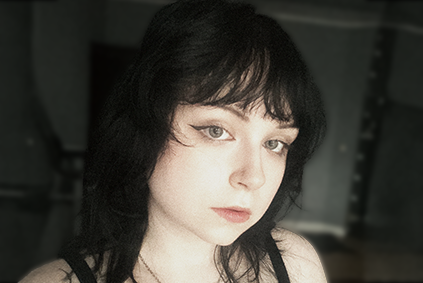
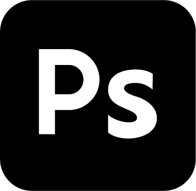
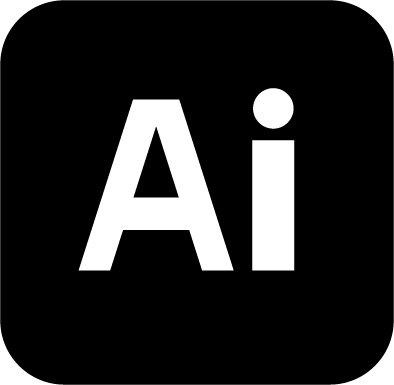
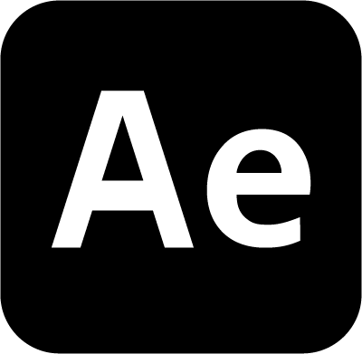
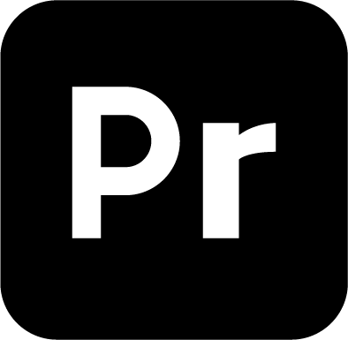
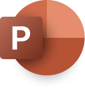

About me
Hi! I'm Klaudia Dobrzelewska,
a 26-year-old Polish designer based in 's-Hertogenbosch.
I'd describe myself as a perfectionist, curious, creative, and a problem solver. Other than that, I'm trilingual. Polish is my native language and I'm fluent in Dutch and English.
In my free time, I enjoy going to concerts, discovering new places and gaming.
Education
Amsterdam University of Applied Sciences
Communication and Multimedia Design
2021 – 2026
- Minor in Data Visualisation
- Minor in Visual Interface Design
- Propedeutic exam, cum laude
Experience
Download CV
Team EIFFEL
UX / UI design graduation project
February 2026 – August 2026
- Worked on the UI design of Team EIFFEL’s new AI and my own concept for “Vindbaar”, an AI-powered document management system.
Team EIFFEL
Design intern
September 2025 – February 2026
- Worked on internal documents, ad campaigns, social media content, and web designs.
- Helped develop visual concepts and turn ideas into finished designs.
- Worked on a range of projects while keeping designs consistent with the EIFFEL brand.
Eatcard
Creative Marketing Designer
July 2024 – August 2025
- Worked on various marketing materials, customer content, social media content and web designs.
- Managed the company's social media together with another coworker.
- Proofread and edited written content.
Eatcard
UX / UI Design intern
May 2024 – July 2025
- Worked on a new design for the Eatcard Support website.
Skills






HTML
CSS
JS